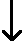

Degrees of freedom
Each addition of a term to the model causes a reduction in the residual sum of squares — the sum of squares explained by the term. It also has degrees of freedom equal to the number of non-zero parameters in the term. The diagram below shows the degrees of freedom for each explained sum of squares associated with randomised block data.
| No difference between blocks and factor does not affect Y yijk = µ + εijk |
| (gB - 1) params |
| The blocks differ, but factor does not affect Y yijk = µ + βi + εijk |
| (gX - 1) params |
| The blocks differ and factor affects Y yijk = µ + βi + γj + εijk |
| (gB - 1)(gX - 1) params |
| The factor affects Y in different ways within different blocks yijk = µ + βi + γj + δij + εijk |
Analysis of variance table
The test for whether the factor has the same effect in every block (i.e. for interaction between the blocks and factor) is based on the size of the interaction sum of squares.
The explained and residual sums of squares are again presented in an analysis of variance table. Each sum of squares is divided by its degrees of freedom to give mean sums of squares then the mean explained sums of squares are divided by the mean residual sum of squares to give F ratios. A p-value is then associated with each F ratio to test whether the corresponding term is needed in the model. (The p-values are found from F distributions.)
| Source of variation |
Sum of sqrs |
d.f. | Mean ssq | F-ratio | p-value |
|---|---|---|---|---|---|
| Blocks | SSB | (gB - 1) | MSB | MSB / MSResid | (F distn) |
| Factor | SSX | (gX - 1) | MSX | MSX / MSResid | (F distn) |
| Interaction | SSBX | (gB - 1)(gX - 1) | MSBX | MSBX / MSResid | (F distn) |
| Residual | SSResid | n - gBgX | MSResid | ||
| Total | SSTotal | n - 1 |
Interpretation of p-values
The conclusion about whether there is interaction between blocks and the factor is based on the p-value associated with the interaction sum of squares:
| p-value | Interpretation |
|---|---|
| over 0.1 | no evidence of interaction |
| between 0.05 and 0.1 | very weak evidence of interaction |
| between 0.01 and 0.05 | moderately strong evidence of interaction |
| under 0.01 | strong evidence of interaction |
Order of testing
The analysis of variance table also includes F ratios and associated p-values for the main effects of the factor and the blocks. These p-values should not be used unless it is concluded that there is no interaction.
If there is an interaction, it is not meaningful to test the main effect for the factor.
It would make no sense to drop the main effect for the factor if there is evidence from the interaction p-value that the effect of the factor is different for different blocks!
Example
Drag the red arrow in the analysis of variance table to successively add terms for the blocks and factor and then an interaction between blocks and the factor. Each successive term reduces the residual sum of squares.
The p-value corresponding to the interaction sum of squares is extremely small — it is reported as zero — so we should come to the following conclusion.
There is extremely strong evidence that the factor affects the response in different ways in the different blocks.